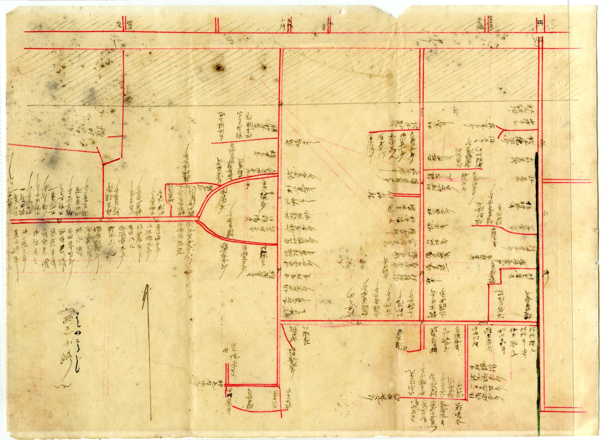
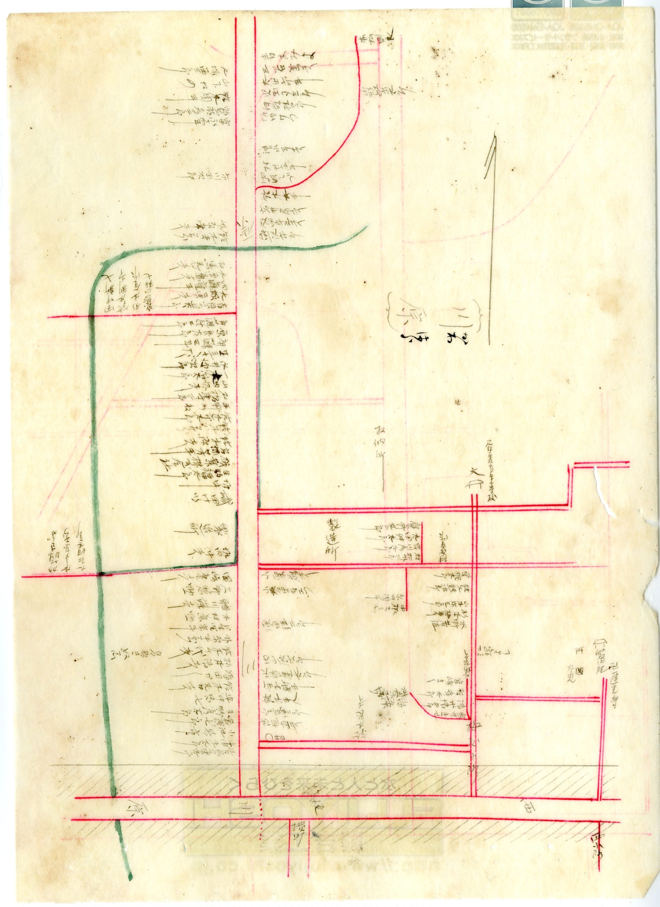

THE SHAPE OF AN OLD TOWN古い町のかたちは、地図に残っている
明治の地図から読み取れるのは、まず道のかたちです。東西にのびる旧東海道という太い背骨があり、そこから玄妙小路・寺小路・地蔵小路・横町・西之小路・倉小路・南小路・清水小路といった細い道が分かれていきます。街道沿いには家が密に並び、一軒一軒の間口は狭く、その分だけ敷地は奥へ長くのびています。緑の線でたどられた川や用水も、町のあちこちを縫って流れています。
これは宿場町に共通する特徴です。そして魅力であると同時に、現代の不動産取引では、いくつもの確認事項を生む原因にもなります。古い町の土地は、地図のかたちを知らずに「坪いくら」とだけ考えると、思わぬところでつまずきます。

FIVE POINTS古い町の土地で、価格より先に確かめること
明治の地図を入口にすると、確認すべき点が具体的に見えてきます。昔からある道、家と家の距離、奥に長い敷地、細い路地、寺社や旧道との関係、昔の町名や字名――。これらは懐かしい風景の話ではなく、売却の可否や価格を左右する、現在進行形の論点です。
宿場町・見付の土地で、特に注意したいこと
- 道路の幅員（はばいん） ― 細い小路に面した土地は、接する道路が建築基準法上の道路か、幅が足りているかで評価が変わります。
- 接道 ― 敷地が道路にどれだけ接しているか。間口が狭い、奥まっているといった土地では特に重要です。
- 再建築の可否 ― 今の家を解体すると新しく建てられない（再建築不可）土地が、古い市街地には潜んでいることがあります。
- 境界 ― 隣地や道路との境界がはっきりしているか。古い町ほど、境界が曖昧なまま受け継がれている例があります。
- 上下水道 ― 引き込みの有無や老朽化、私設管の共有など、見えない部分の確認が必要です。
これらは、現地を見るだけでは分かりません。法務局の資料、市の道路台帳、過去の経緯、そして地域そのものへの理解――いくつもの手がかりを重ねて、はじめて見えてきます。だからこそ、古い町の不動産は、価格だけでなく「調査の深さ」で結果が変わるのです。

古い町の不動産は、価格ではなく、調査の深さで結果が変わる。
WHY IT MATTERS調査が、売主と買主の両方を守る
調査を尽くすことは、面倒な手続きのためではありません。境界や接道、再建築の可否をあらかじめ整理しておけば、買い手は安心して検討でき、結果として土地は適正に評価されます。逆に、確認を後回しにしたまま売り急ぐと、契約後のトラブルや、値引き、白紙解約につながりかねません。丁寧な調査は、売主の手取りを守り、買主の安心を支える――その両方に効いてくる準備です。
見付のように長い歴史を持つ町では、なおさらです。土地の一筆一筆に、何代にもわたる暮らしの経緯が積み重なっています。その背景を読み解けるかどうかで、同じ土地でも結果が変わってきます。
古い町の土地ほど、売る前の調査がものを言う。
富士ヶ丘サービスでは、磐田市見付周辺の古い住宅・相続した土地・空き家について、境界・接道・再建築・上下水道などの確認を含めたご相談を承っています。価格を出す前に、まず土地の状況を一緒に整理しましょう。